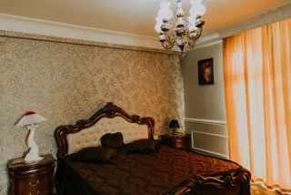

Locații de nuntă în Beiuș
- locație în director
- 1
- medie ponderată Google
- 4,4 / 5
- evaluări Google
- 358
Cum alegi o locație în Beiuș
Pentru Beiuș, fișa din director este Regal Beius. Punctul de întâlnire indicat în sursele adresei este Strada Burgundia Mică 18, 415200 Beiuș. Dacă vii să vezi locul pentru cununie, deschide indicațiile de drum din fișă și verifică împreună cu gazda intrarea la care vă întâlniți.
În fișele proprietăților poți compara dotări concrete la Regal Beius (terasă, cazare, parcare gratuită). Pentru oferta de nuntă, întreabă ce spații și servicii dintre cele prezentate intră în rezervarea privată pentru data voastră.
Pentru invitații care rămân peste noapte, în apropiere de Regal Beius apare în evidența turistică și Maria din Beiuș. Distanța măsurată între repere este de 0,9 km în linie dreaptă. Verifică traseul de întoarcere și rezervă camerele separat dacă oferta locației nu cuprinde cazare.
Dacă vrei să vezi două proprietăți în aceeași zi, poți continua de la Regal Beius spre Pensiunea Roşia din Roșia. Punctele lor sunt la 16,4 km în linie dreaptă. Deschide traseul înainte să fixezi ora celei de-a doua vizite, mai ales dacă grupul se deplasează cu autocarul.
Dintre experiențele publicate în această zonă, profilul Regal Beius adună 358 de evaluări Google. Când citești relatările, caută evenimentul care seamănă cu al vostru și verifică dacă autorul descrie același salon ori aceeași terasă pe care o poți rezerva acum.
Locații pentru vizionare
Ordinea ține cont de nota Google și de numărul evaluărilor. Cum calculăm ordinea

Fotografie a locației · Sursa fotografiei Beiuș · Hotel
Regal Beius
Regal Beius, Beiuș. Pentru un oaspete de la Regal Beiuș, unul dintre avantajele cazării a fost amplasarea retrasă.
Strada Burgundia Mică 18, 415200 Beiuș+40 771 383 838
Întrebări despre locațiile din Beiuș
Ce proprietăți din Beiuș au grădină sau terasă?
Regal Beius (terasă). Cere administratorului condițiile de folosire pentru o petrecere privată.
Care locație din Beiuș are cele mai multe evaluări Google?
Regal Beius are 358 de evaluări în profilul Google folosit la documentare. Evaluările acoperă și alte experiențe la proprietate, inclusiv vizitele fără eveniment.
Ce alte localități pot include într-o vizionare lângă Beiuș?
Cele mai apropiate adrese comparate pe hartă sunt în Roșia, Stana de Vale, Chișcău. Găsești mai jos distanțele dintre proprietățile folosite pentru această comparație.
Vizionări în apropiere
- Roșia · 1 locație. Între Regal Beius și Pensiunea Roşia sunt 16,4 km în linie dreaptă.
- Stana de Vale · 1 locație. Între Regal Beius și Hotel Iadolina sunt 20,2 km în linie dreaptă.
- Chișcău · 1 locație. Între Regal Beius și Conacul Peștera Urșilor | Pensiune, Restaurant sunt 20,8 km în linie dreaptă.